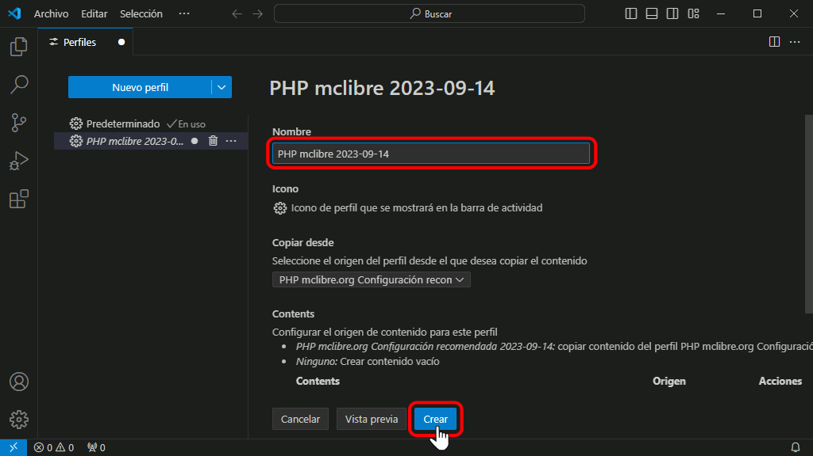
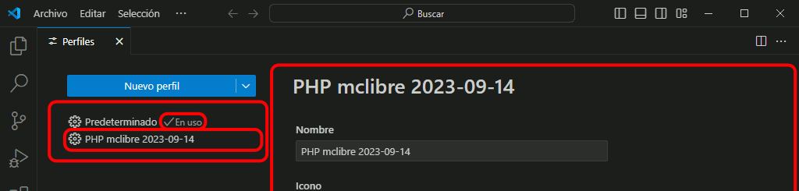

Importar el perfil recomendado
La URL del perfil recomendado para seguir estos apuntes en Windows es: https://gist.github.com/BartolomeSintes/b2ad1d8c4e87bf8015c5c136a095134f (actualizado el 14 de septiembre de 2023).
Una vez importado este perfil en Visual Studio Code, se requieren un par de ajustes adicionales que se comentan en los apartados siguientes.
Para importar el perfil de Visual Studio Code recomendado para este curso ...
- Haga clic en la rueda dentada y elija la opción :

- Se abrirá la pestaña de administración de los perfiles (con el título Perfiles):

- Haga clic en el triángulo situado a la derecha en el botón Perfiles y elija la opción :

- Se abrirá una caja de texto para escribir la URL del perfil compartido:

- La URL del perfil recomendado para seguir estos apuntes en Windows es: https://gist.github.com/BartolomeSintes/b2ad1d8c4e87bf8015c5c136a095134f (actualizado el 14 de septiembre de 2023).
- Copie y pegue el enlace en la caja de texto y pulse Intro:

- Se mostrará el nuevo perfil en la lista de perfiles de la izquierda y la información sobre el contenido del perfil en la parte dercha de la ventana:

- El nombre del perfil se mostrará en una caja de texto:

- Ese nombre se puede cambiar, por ejemplo, por un nombre más corto. Es aconsejable que el nombre de cada perfil empiece de forma distinta (el motivo se explica en el apartado siguiente, al seleccionar el perfil). Para terminar, haga clic en el botón "Crear".

- El perfil creado se mostrará en la lista de perfiles del lado izquierdo. Los detalles del perfil se muestran en el lado derecho. Fíjese en que al crear un perfil este no se selecciona automáticamente (en la captura, el perfil seleccionado sigue siendo el perfil predeterminado).

Una vez importado este perfil en Visual Studio Code, se requieren un par de ajustes adicionales que se comentan en los apartados siguientes. Aunque uno de los ajustes no requiere haber seleccionado una carpeta o área de trabajo, el otro sí lo requiere, por lo que se recomienda seleccionar una carpeta o un área de trabajo antes de completar la configuración del perfil.